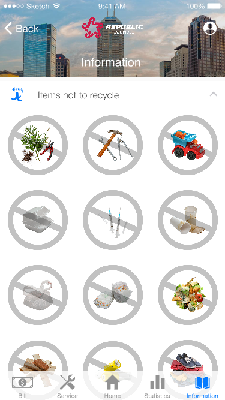

Abstract
Sustainability exists to encourage practices that help reduce resource consumption and waste to address the encompassing challenge of climate change. To reach the US Environmental Protection Agency’s (EPA) 2017-2022 recovery goals, we focus on the mission of The Office of Resource Conservation and Recovery (ORCR): “to protect human health and the environment by ensuring responsible national management of hazardous and nonhazardous waste”. One of their goals is “conserve resources by reducing waste”. In Indianapolis, the recycling rate is 6%, and in Indiana it is 16.7%. In successfully implementing sustainability initiatives for recycling, generalizability is a problem as there is evidence of variability in policies between states. We must use tools and resources at the state and local government level while also building technologies to give users tools for recycling management, engagement, and education. We understand that grants will go further and support recycle faster when other stakeholders throughout the supply chain.
-
Role
User Experience Designer
-
Technology
Sketch, InVision
-
Clients
Republic Service Inc.
-
Time
September 2018-October 2018
Goal
In addressing the IUPUI Grand Challenge of Environmental Change, we seek to investigate how a difference can be made at a local and individual level by researching sustainability practices in the college campus setting. Alongside reviewing relevant literature, we collected qualitative field data through interviews and observations with people and places of interest within our problem space. From our findings, we learned about challenges and opportunities from both the standpoint of the individual college student, and that of the wider campus administration.
Problem Framing
Sustainability exists to encourage practices that help reduce resource consumption and waste to address the encompassing challenge of climate change. To reach the US Environmental Protection Agency’s (EPA) 2017-2022 recovery goals, we focus on the mission of The Office of Resource Conservation and Recovery (ORCR): “to protect human health and the environment by ensuring responsible national management of hazardous and nonhazardous waste”. One of their goals is “conserve resources by reducing waste”. In Indianapolis, the recycling rate is 6%, and in Indiana it is 16.7%. In successfully implementing sustainability initiatives for recycling, generalizability is a problem as there is evidence of variability in policies between states. We must use tools and resources at the state and local government level while also building technologies to give users tools for recycling management, engagement, and education. We understand that grants will go further and support recycle faster when other stakeholders throughout the supply chain.
Research
{kind=link}
{kind=link}
Design Exploration
Exploration 1- Further education in recycling practices
Promote further practices in recycling while also addressing commonly occurring gaps of knowledge like those identified in our challenges. Specify what types of waste can be recycled, but put further emphasis on the kinds of material that can’t be recycled, especially materials that may be mistaken as recyclable (e.g. soft plastics).
Exploration 2 - Collecting, Measuring, and Visualizing sustainability impact data
Explore ideas on how to make measuring sustainability impact (recycling, water use, energy use, waste) more efficient, accurate, consistent, and instantaneous. Further exploration would then be figuring out ways to visualize and present this data effectively as a communication tool to help further emphasize the difference practicing sustainability can make in the local community. This would help motivate students to take individual action, as well as help convince higher institutions to adopt more sustainability initiatives.
Exploration 3 - Incentivizing sustainable practices
Explore ideas on how to reward students for practicing sustainability to further drive engagement within their social context.
Green points collected ways: every time when you do some sustainability activities like using the bike or scooter share program, shopping in environmental friendly place like the farmer market, or bring your recycle things to a specific place at a specific time, you can get green points in a app.
Green points using ways: you can have a discount or coupon by using your green points in your app next time you shop in the farmer market or rent the bike or scooter.
Brainstorming Summary
In our brainstorming sessions, each one had its own differences in the way that they were conducted and the results that they produced. Our first session was heavily team-driven as all three members generated ideas together. Three 10-minute segments were spent on finding 10-12 ideas on the three design exploration topics of our problem-framing report (education, visualization, and incentivizing). This session laid out the foundation of ideas that our future sessions would then build and expand upon. Our second session was done in collecting ideas from other students who brainstormed based on the same three design exploration topics. The results they produced helped give us a broader view of areas to look toward in design opportunities. Our third session was then done with emphasis on individual idea generation, where each group member came up with 10-12 ideas individually which we would then share. At this point of our brainstorming, ideas produced consisted of a mix of some new, some similar, and some added onto pre-existing topics. When choosing what ideas to use for our solution, we did not necessarily pick from a specific session. Rather, we saw all three sessions as a pool of ideas in whole, and we figured that based on each of the three design exploration topics, we tried to come up with a solution of each that integrated multiple ideas together. We also took our feedback from the previous report into consideration, thinking about how each idea would apply to a larger societal and cultural scale as opposed to an individual level, and how each solution implemented more action for sustainability beyond just persuasion.
Low-Fidelity Prototype
Low-fidelity full screenshot gallery


{kind=link}
High-Fidelity Prototype
High-fidelity full prototype

{kind=link}

{kind=link}
Methods
When prototyping and conducting evaluations for our design solution, we centered our focus around four primary features that showcased our improvements and additions to the application. This consisted of running through tasks such as utilizing the information guide to view what proper materials to recycle, viewing the user’s bill details, utilizing the recycling truck pickup service, and viewing the user’s recycling statistics. When carrying out our evaluations, each of our team members conducted a self-cognitive walkthrough and a think-aloud evaluation with other potential users. Both of these were centered around going through each of the four key tasks previously described, where we seeked to collect feedback on how well our implemented features appealed to the user’s experience in each task.
Key Evaluation Insights
Our evaluation insights included improving the mechanisms, semantics and consistency of our prototype. First, the mechanism behind our design for the recycling pickup service went through a significant change. Second, the semantic meanings had different interpretations about the functions for different users. Our last key issue was in inconsistencies. We had identified some problems with the process of the task, such as some buttons missing in some screens.
Future Directions
With our design solution, our evaluation only focused on the new recycling features. Hence, we should consider conducting evaluations for the existing functions, and we have to work on the prototype for other peripheral functions. In case we want to convince Republic Service to adopt our design, we should provide a comprehensive design solution document and do usability testing for the complete app.
There are three future directions we would do next on the project. First, a multi-family-based model. During the design exploration process, we had come with a solution for household-based model, where multiple users accounts can be linked to a household. This idea would be in response to the feedback for our presentation. Similar to a Netflix family plan, our application would have manageable roles of administrator users and standard users. Second, we would follow up the policy at local level. As China’s policy shifts, there is possibility of a crisis in recycling management. As the country’s recycling industry is at a crossroads, we have to re-educate users about how to reduce contamination. Katie Robinson, director of the office of sustainability for the city, said that Indianapolis is “well-positioned in this day to create a program in the new climate that exists.” Last, as a way the RFID can be used to track containers and verify services, there are further research to these sensors interfacing with dozens of different customer service software to further enhance community-driven recycling.